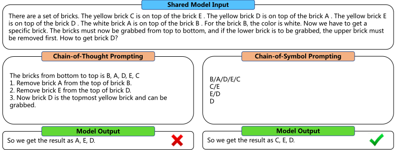
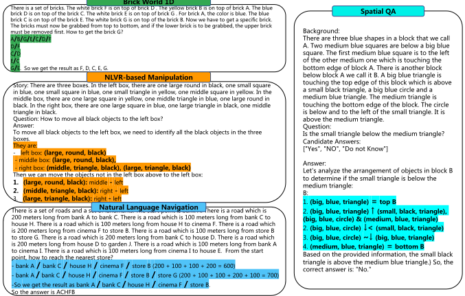
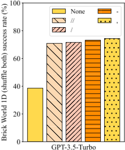
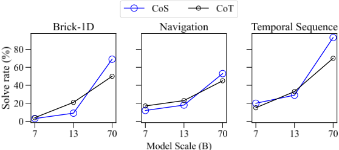

Chain-of-Symbol 提示用于大语言模型的空间推理
论文发现当前 LLM 在理解自然语言描述的虚拟空间环境并做规划的任务上表现不佳，进而追问：自然语言是否是 LLM 表示复杂空间环境的最佳方式，还是符号表示更高效有效？作者提出 COS（Chain-of-Symbol Prompting），在 few-shot 示范的中间思考步骤中用紧凑符号（如用"/"表示"在…之上"、用三元组描述对象属性）替代冗长自然语言描述，无需对模型做额外训练。在自建的 Brick World、NLVR-based Manipulation、Natural Language Navigation 三个空间规划任务及 SPARTUN 空间问答数据集上，COS 全面超过 CoT：GPT-3.5-Turbo 在 Brick World 上准确率最高提升 60.8%（31.8%→92.6%），示范中间步骤 token 最多减少 65.8%（407→139）。分析还显示 COS 结果更稳定、对符号选择鲁棒，且在 Llama-2 上要到 70B 规模才明显超过 CoT，提示抽象符号理解是随规模涌现的能力。对团队而言，这是"中间推理的表示形式同时影响质量与 token 成本"的直接实证，可借鉴到提示设计与上下文压缩实践中。
当前 LLM 在需要理解以自然语言描述的虚拟空间环境并相应行动/推理的复杂规划任务上能力不足；论文探究自然语言是否为 LLM 表示复杂空间环境的最佳方式，还是符号表示等替代方案更高效、更有效。
提出 COS（Chain-of-Symbol Prompting）：输入的场景与问题保持自然语言不变，将 CoT 示范中的自然语言中间思考步骤替换为考虑空间关系的紧凑符号表示（如用"/"表示"from the top of"、用"(large, round, black)"三元组表示对象及其属性），并给出可泛化的三步示范构造流程；以 few-shot 方式提示 LLM，无需对模型做额外训练。
GPT-3.5-Turbo 在 Brick World（1D, Shuffle Label）上准确率从 31.8%（CoT）提升至 92.6%（COS），提升幅度 60.8%
Brick World 示范中间步骤 token 从 407 降至 139（最多节省 65.8%）；NLVR-based Manipulation 从 653 降至 534
最难设置（2D Shuffle Both）上 zero-shot CoT 仅 9.8% 准确率；1D Shuffle Both 上 COS 将准确率从 28.2%（CoT）提升至 69.7%
COS 比 CoT 更稳定：1D No Shuffle 准确率标准差 1.9（COS）vs 11.0（CoT）；中文版 Brick World 1D 上 COS 39.1% vs CoT 22.9%
Llama-2 7B/13B 上 COS 多数情况不及 CoT，70B 上在全部三个任务明显优于 CoT，作者推断大模型可能具有抽象符号理解的涌现能力
SPARTUN 上 COS 在 GPT-3.5-Turbo 与 GPT-4 上均优于 CoT 且使用更少 token
区别于 CoT 以自然语言作为中间思考步骤，COS 用紧凑符号表示空间关系作为中间步骤；区别于需要训练的 Symbol Tuning（同期工作），COS 仅靠 few-shot 示范即可生效、无需额外训练，并同时带来准确率提升与 prompt token 节省。
相关度级别：high
命中能力域：3.2 提示工程 | 3.1 上下文工程与记忆 | 3.5 评测与可靠使用
理由：直接命中 3.2 提示工程：COS 是 CoT 中间表示层面的提示技术创新，属于团队"提示技术与模式"的核心范围；其用符号化/结构化表示压缩中间步骤、显著降低 prompt token 的做法与 3.1 的结构化上下文组织与压缩直接相关；论文还提供了较完整的评测协议（accuracy/precision/recall、多组示范方差、多模型规模对比）与成本效率证据，覆盖 3.5。对聚焦"把模型用好"的团队，这篇论文证明中间推理的表示形式是影响质量与成本的关键可调维度。
建议动作：深入精读并做内部分享
arXiv:2305.10276v7 [cs.CL] 2024年8月5日
Hanxu Hu 1,3 ∗ , Hongyuan Lu 2 ∗ † , Huajian Zhang 3 , Yun-Ze Song 1 , Wai Lam 2 , Yue Zhang 1 1 西湖大学 2 香港中文大学 3 爱丁堡大学 huhanxu1233@gmail.com {hylu,wlam}@se.cuhk.edu.hk v1hzha17@exseed.ed.ac.uk zhangyue@westlake.edu.cn
本文首先研究了大语言模型（LLMs）在复杂规划任务上的表现，这类任务要求 LLMs 理解通过自然语言模拟的虚拟空间环境，并在文本中相应地进行行动或推理。通过在经典空间规划场景上进行评估，我们发现当前的 LLMs 仍然缺乏处理文本中空间关系的能力。这引出了一个问题：对于 LLMs 而言，自然语言是否是表示复杂空间环境的最佳方式，还是诸如符号表示之类的其他替代方案更加高效和有效？为此，我们提出了一种名为 COS（Chain-of-Symbol Prompting）的新方法，该方法在链式的中间思考步骤中使用精简符号来表示空间关系。COS 易于使用，且无需对 LLMs 进行额外训练。大量实验表明，在全部三项空间推理与规划任务中，COS 的性能明显超越了以自然语言描述的思维链（Chain-of-Thought, CoT）提示，且与 CoT 相比，输入中使用的 token 甚至更少。性能提升十分显著：对于 GPT-3.5-Turbo，在 Brick World 上准确率最高提升 60.8%（从 31.8% 提升至 92.6%）。COS 还明显减少了提示中的 token 数量：在 Brick World 的示例中，中间步骤的 token 数量最多减少 65.8%（从 407 减至 139）。有趣的是，我们还观察到，随着模型规模的扩大，会出现理解抽象符号的涌现能力。1
给定一组目标行为示例，大语言模型（LLMs）展现出完成广泛任务的卓越能力，其性能经常超越人类（Brown et al., 2020; Srivastava et al., 2022）。具体而言，LLMs 在推断过程中展现出令人印象深刻的顺序文本推理能力，使其在遇到以自然语言描述的推理问题时性能得到显著提升（Nye et al., 2021; Wei et al., 2022）。这一现象可以通过多步的中间思考过程链清晰地观察到，即“思维链”（Chain of Thought, CoT，Wei et al. 2022）。
传统的 CoT 通常在提示中利用自然语言作为中间思考步骤。尽管 CoT 在许多情况下能够增强 LLMs 的能力，但在某些情况下，冗余的自然语言和无关信息也会妨碍 LLMs 的性能（Shi et al., 2023）。例如，空间语言和描述对语言模型来说可能难以理解 Mirzaee et al. 2021; Mirzaee & Kordjamshidi 2022，原因在于
∗ 同等贡献
† 通讯作者
1 我们的代码可在 https://github.com/hanxuhu/chain-of-symbol-planning 获取。
1

复杂的空间关系。在词序列中对齐符号并用符号表示空间关系可以是一种更简洁的表示方式，因而可能更容易被 LLMs 理解。因此，我们探索在 LLM 提示中使用符号，这仍是一个研究不足的课题。这一研究十分重要，因为它意味着超越语言模型本身语言理解范畴的理解能力。
为了探索符号表示在提示中的作用，我们将复杂空间理解与规划作为评估场景，这些场景要求 LLMs 理解通过自然语言描述的虚拟空间环境，并在此类环境中进行规划并实现特定目标。受现有经典规划竞赛和空间推理数据集的启发，我们提出了三个领域：(i) Brick World、(ii) NLVR-based Manipulation 和 (iii) Natural Language Navigation。图 1 展示了 Brick World 1D 的一个示例，这三个任务均在第 2.1 节中详细描述。这三个任务均以自然语言描述。我们还评估了一个现有的空间问答数据集 SPARTUN（Mirzaee & Kordjamshidi, 2022），该数据集使用人工生成的问题，因此更接近真实场景。对于这些任务，LLMs 需要理解以自然语言表述的虚拟环境，包括待操作对象之间的空间关系以及针对操作的约束条件，这对真实的人类而言很容易。然而，我们发现 LLMs 在这些任务上的性能仍有改进空间。
作为本研究的一项主要贡献，我们研究了用于表示空间关系的符号表示方法，并提出了一种名为 Chain-of-Symbol（COS）提示的新型方法，以激发大语言模型（LLMs）的空间理解与规划能力。如图 1 所示，与左侧所示的思维链（CoT）提示中使用自然语言描述的中间思考步骤不同，CoS 提示去除了冗余的文本描述，仅使用一组符号来表示复杂环境中物体之间的空间关系。COS 在性能和效率方面均取得了显著提升（准确率最高提升 60.8%，输入 token 数量最多减少 65.8%）。我们推测，这一提升得益于 COS 所产生的更高效的符号表示。我们的主要贡献有三个方面：
2

表示。COS 在空间任务上大幅提升了 LLMs 的表现。COS 带来的准确率提升十分可观，同时还显著减少了 LLMs 的 token 消耗。
受 Liu et al. (2023) 中描述的经典规划领域与任务以及现有空间推理数据集 Suhr et al. (2017) 的启发，我们探索了 LLMs 在三种自然语言空间规划任务中的表现。对于这三种任务，我们都可以将问题形式化为：给定一个由自然语言描述的虚拟场景以及一个规划问题。LLMs 应将场景和问题同时作为输入，并相应地输出解决方案以解答该问题。这样的解决方案通常包含一系列步骤，以达成最终目标。最终的测试任务共包含 5,500 个评估实例，其中 4,000 个来自 Brick World，1,000 个来自 NLVR-based Manipulation，其余 500 个来自 Natural Language Navigation。我们使用代码根据每个任务的定义生成这些实例。
图 2 展示了 Brick World 的一个实例（上方），该任务要求大语言模型（LLM）通过依次抓取积木来获取指定的积木。我们针对 Brick World 任务探索了一维（1D）和二维（2D）两种场景。具体而言，在 1D 场景中，积木之间仅存在垂直关系。在 2D 场景中，除垂直关系外，还存在水平关系，我们将其表述为 “in the front of”（在……前方）。为了探究 LLM 在语言理解方面的特性，我们研究了描述虚拟场景的不同难度级别。下面按难度递增的顺序对这些方式进行描述。
3
我们使用颜色来表示积木，这既丰富了信息，也增加了任务的难度。对于 1D 和 2D 的每种设置，我们各创建 500 个评估实例。最终评估集共包含 4,000 个实例。
图 2 展示了基于 NLVR 的操作（NLVR-based Manipulation）任务的一个实例（中间）。我们将自然语言视觉推理（Natural Language Visual Reasoning, NLVR；Suhr et al. (2017)）任务的格式转换为基于文本的规划任务。基于 NLVR 合成图像的创建规则，我们使用 Python 代码为虚拟空间环境创建了 1,000 条自然语言描述。具体而言，对于每条描述，我们像 NLVR 中那样设置三个盒子，分别位于左侧、中间和右侧，每个盒子中包含若干物体。每个物体具有三个属性：颜色、形状和大小。每条描述都对应一个问题，该问题涉及如何将所有满足某一属性特定条件的物体（例如“所有黑色物体”或“所有圆形物体”）移动到指定的目标盒子。真值（ground truth）即为所有满足该条件且需要被移动（即不在目标盒子中）的物体的集合。
图2展示了自然语言导航（Natural Language Navigation）的一个实例（见底部）。受视觉语言导航（Vision-and-Language Navigation）（Gu et al., 2022）的启发，我们创建了一个虚拟空间环境，它类似于导航任务的二维地图，但仅使用自然语言描述。具体而言，我们定义了一组地标：'store'、'bank'、'house'、'cinema'、'garden'、'school'。每条描述包含7到10个地标。我们使用Python代码创建了500个评估实例：地标之间的关系为二叉树结构，其中根节点表示虚拟场景中的起点，除叶节点外的每个节点都有一个或两个子节点，节点之间的距离为100米或200米。每条描述都有一个相关问题，即如何从起点到达最近的某一特定类型的地标。
我们还在人工标注的现有空间问答任务 SPARTUN (Mirzaee & Kordjamshidi, 2022) 上对 COS 进行了评估。与先前的空间问答数据集以及我们的三个合成空间规划任务相比，该数据集包含更多样化的空间关系类型和空间表达。并且该数据集中的问题均为人工标注，更贴近真实世界场景。该数据集中的场景基于 NLVR (Suhr et al., 2017) 和 SPARTQA (Mirzaee et al., 2021) 以自然语言进行描述。
我们提出了面向大语言模型（LLM）的符号链（Chain-of-Symbol, COS）提示方法，该方法将用自然语言描述的模拟环境转换为考虑空间关系的精简符号表示。为了使我们的 COS 构建方法具有可泛化性与可靠性，我们在创建 COS 示例时采用了三步流程，这些示例可用于任何相关任务：
4
随后，我们以少样本（few-shot）方式使用这些 COS 示例来引导语言模型，从而像思维链（CoT）(Wei et al., 2022) 那样对 LLM 进行提示。
图 1 展示了由模型生成的一个 CoS 示例。在该示例中，我们可以看到 CoT 与 COS 接收到的是相同的、以自然语言文本形式给出的共享模拟空间环境。COS 所描绘的中间思考过程与 CoT 不同。后者仅以自然语言表示环境，而前者则使用考虑空间关系的精简符号表示。具体而言，我们在此使用符号" / "来表示空间关系“从……顶部”（from the top of）。通过这样的转换并去除冗余描述，COS 有效地提升了模型性能，同时降低了使用 LLM 进行推理的成本。
图 2 展示了我们提出的全部三个规划任务的 CoS 示例。对于基于 NLVR 的操作（NLVR-based Manipulation）任务，我们将对象的自然语言描述转换为三元组格式，例如"(large, round, black)"。对于自然语言导航（Natural Language Navigation）任务，我们使用符号"/"将各地标连接起来以表示其顺序。对于空间问答（Spatial QA）任务，我们使用"="、" ∼ "等一组符号来表示不同的空间关系，并使用"( , , )"形式的三元组来表示对象及其属性。
作为一种面向 LLM 的提示方法，CoS 提示具有多项吸引人的特性：
在本节中，我们首先在 4.1 节介绍我们的实验设置，包括我们所使用的不同方法的设置、语言模型以及评估指标。然后，在 4.2 节中，我们报告所提出的三个空间规划任务的结果。在 4.3 节中，我们报告在 SPARTUN 数据集上的结果。
我们在所提出的三个空间规划任务以及现有的 SQA 数据集上，基于 ChatGPT（gpt-3.5-turbo）和 LLAMA-2 系列等具有代表性的大语言模型（LLM），对链式符号（CoS）和思维链（CoT）进行评估。共有三种提示：零样本 CoT、少样本 CoT 以及少样本 CoS（我们的方法）。
零样本思维链提示 我们将零样本 CoT 作为基线。原因在于，我们发现所选用的 LLM 即使在没有被特别要求的情况下，也会在回答中自然地给出其中间步骤（CoT）。我们还发现，要求它们去掉思考步骤会明显降低结果的质量。因此，我们允许 LLM 生成 CoT，但不在提示中放入任何示例，而是像 Kojima 等人（2022）那样给出诸如 "Let's think step by step" 之类的提示。为了便于评估，我们要求 LLM 用逗号分隔各地标来输出最终结果。
5
| Model. | No Shuffle.Acc. | No Shuffle.Pre. | No Shuffle.Rec. | Shuffle Description.Acc. | Shuffle Description.Pre. | Shuffle Description.Rec. | Shuffle Label.Acc. | Shuffle Label.Pre. | Shuffle Label.Rec. | Shuffle Both.Acc. | Shuffle Both.Pre. | Shuffle Both.Rec. | Shuffle Both.Tok. |
|---|---|---|---|---|---|---|---|---|---|---|---|---|---|
| 1D Scenario | 1D Scenario | 1D Scenario | 1D Scenario | 1D Scenario | 1D Scenario | 1D Scenario | 1D Scenario | 1D Scenario | 1D Scenario | 1D Scenario | 1D Scenario | 1D Scenario | 1D Scenario |
| zs-CoT | 61.0 | 77.2 | 71.9 | 60.4 | 77.5 | 77.5 | 31.8 | 63.4 | 59.8 | 28.2 | 58.6 | 55.3 | - |
| CoT | 81.0 ± 11.0 | 87.7 ± 4.5 | 90.1 ± 2.6 | 71.5 ± 9.2 | 90.7 ± | 3.6 81.8 ± 7.1 | 75.1 ± 10.1 | 88.0 ± 3.6 | 90.1 ± 0.9 | 43.0 ± 4.4 | 71.4 ± 3.3 | 75.7 ± 1.6 | 407 |
| COS | 96.6 ± 1.9 | 98.0 ± 0.8 | 97.7 ± 0.8 | 95.9 ± 1.2 | 97.9 ± | 0.6 97.5 ± 0.3 | 92.6 ± 2.0 | 97.0 ± 1.3 | 95.9 ± 1.1 | 69.7 ± 5.1 | 86.7 ± 4.2 | 83.6 ± 1.6 | 139 |
| 2D Scenario | 2D Scenario | 2D Scenario | 2D Scenario | 2D Scenario | 2D Scenario | 2D Scenario | 2D Scenario | 2D Scenario | 2D Scenario | 2D Scenario | 2D Scenario | 2D Scenario | 2D Scenario |
| zs-CoT | 32.7 | 53.8 | 60.6 | 14.8 | 31.9 | 46.9 | 13.0 | 32.0 | 42.3 | 9.8 | 30.4 | 38.4 | - |
| CoT | 25.0 ± 15.6 | 49.8 ± 9.8 | 45.0 ± 10.5 | 21.5 ± 8.2 | 45.6 ± 5.4 | 41.2 ± 6.3 | 21.8 ± 2.3 | 44.7 ± 5.9 | 43.2 ± 4.0 | 14.9 ± 3.4 | 38.1 ± 2.9 | 36.4 ± 3.5 | 546 |
| COS | 60.7 ± 1.9 | 67.2 ± 1.1 | 71.3 ± 1.3 | 33.7 ± 3.2 | 46.7 ± 0.8 | 50.0 ± 1.5 | 23.5 ± 5.0 | 45.9 ± 0.8 | 63.0 ± 12.1 | 28.9 ± 2.3 | 46.3 ± 1.0 | 44.4 ± 2.8 | 341 |
| Model. | No Shuffle.Acc. | No Shuffle.Pre. | No Shuffle.Rec. | Shuffle Description.Acc. | Shuffle Description.Pre. | Shuffle Description.Rec. | Shuffle Label.Acc. | Shuffle Label.Pre. | Shuffle Label.Rec. | Shuffle Both.Acc. | Shuffle Both.Pre. | Shuffle Both.Rec. | Shuffle Both.Tok. |
思维链提示 该基线使用少样本 CoT，其中我们鼓励 LLM 一步一步地思考，并使用五个示例来引导 LLM 的思考过程。注意，中间思考过程以自然语言文本表示，与标准提示（Standard Prompting）相同。与 (Wei et al., 2022) 中一样，我们为每个任务手工制作了五个示例以保证其正确性。为了保证提示的一致性和可靠性，我们遵循由零样本 CoT 提示所生成的 CoT 的格式。我们在每个任务的评估中使用这固定的五个示例。
链式符号提示 如第 3 节所述，CoS 在标准 CoT 提示的基础上增加了精简的符号表示。尽管 CoT 已被证明能在各种任务上给 LLM 带来巨大提升 (Wei et al., 2022)，我们认为使用精简的符号表示可以成为用自然语言文本进行描述的一种替代方案。我们按照第 3 节所述的流程，将 CoT 示例手工转换为 CoS。对于自然语言规划（Natural Language Planning）的每个任务，我们基于与 CoT 相同的示例创建了五个 CoS 示例。
语言模型 我们同时使用开源 LLM（Llama-2）和闭源 LLM ChatGPT（Gpt-3.5-turbo）来评估所有任务。在本文的所有实验中，我们将温度（temperature）设置为 0。
评估指标 对于规划任务，我们使用三种评估指标，即准确率（accuracy）、精确率（precision）和召回率（recall）。我们将准确率定义为达成最终目标的成功率。随后，我们计算真实值（ground truth）与 LLM 输出序列之间的最长公共序列（LCS）来衡量二者的相似度。我们将精确率计算为 LCS 与 LLM 输出长度之比，将召回率计算为 LCS 与真实值长度之比。对于空间问答（spatial QA）任务，我们仅计算准确率。
表 1 报告了 COS 与 zs-CoT 及思维链（CoT）在 Brick World 任务上的对比结果。首先，我们可以看到，无论是从 1D 场景到 2D 场景，还是从 No Shuffle 设置到 Shuffle Both 设置，复杂度都在增加，同时性能也随之下降。使用 zs-CoT 的 ChatGPT 表现不佳，在 2D 场景下最困难的 Shuffle Both 设置上仅取得 9.8% 的准确率。尽管 CoT 带来了一定的改进，但 CoT 的表现仍不尽如人意，在 1D 场景下的 Shuffle Both 设置上准确率为 43.0%，略低于 50% 的门槛。相比之下，我们看到 COS 在该设置上带来了非常好的提升（从 28.2% 提升到 69.7%）。我们发现，COS 在 Brick World 的所有设置上都能带来一致的提升，明显优于 CoT。提升最大的是 1D 场景下的 Shuffle Label 设置，准确率提升了 60.8%（从 31.8% 提升到 92.6%）。
实验中的随机性 为了研究实验中的随机性，我们针对 CoT 和 COS 分别使用三组不同的示例进行了多次试验。表 1 报告了它们的均值和标准差。我们在这里观察到一个总体趋势：COS 报告的标准差通常低于 CoT（例如，在 1D 场景下的 No Shuffle 设置中，COS 的准确率（Acc.）标准差为 1.9，而 CoT 为 11.0）。这表明在 Brick World 上，COS 比 CoT 更稳定。

COS 在不同语言上的表现 除了以英语描述的任务之外，我们还在 Brick World 上用中文测试了 COS。在 Brick World 的 1D 场景中，CoT 报告的准确率为 22.9%，而 COS 报告的准确率为 39.1%，这证明了 COS 对英语以外语言的鲁棒性。
对不同符号的鲁棒性 图 3 展示了 COS 在使用不同符号时的鲁棒性。可以看到，使用不同的符号能带来一致的性能，而完全不使用任何符号则会急剧影响结果。在所有符号中，逗号给出了最佳结果。我们得出结论：COS 对符号的选择具有鲁棒性。
在不同语言模型上的结果 图 4 报告了 1D 场景下在 LLAMA-2 上的结果。实验结果与我们之前的结论一致，即 COS 明显优于 CoT。
为提示节省 token COS 的一个突出优势在于它减少了输入给大语言模型（LLM）的输入 token 数量。对于 Brick World（1D 场景），COS 将中间步骤的 token 数量从 407 减少到 139（表 1，这些数字由 OpenAI Playground 2 报告）。这进而节省了通过 API/GPU 访问 LLM 的成本。
对于这两个任务，我们采用了与 Brick World 几乎相同的实验设置。唯一的区别在于我们所报告的评估指标：我们基于集合而非最长公共序列（Longest Common Sequence）来计算精确率（precision）和召回率（recall）。
主要结果 表 2 报告了使用 GPT-3.5-turbo 在 NLVR-based Manipulation 和 Natural Language Navigation 上的结果。对于这两个任务，COS 在所有指标上的性能均高于 CoT 和零样本 CoT 提示。
为提示节省 token COS 的一个优势在于它能够减少输入 token 的数量。表 2 报告了在 NLVR-based Manipulation 任务中，COS 将中间步骤的 token 数量从 653 减少到 534，几乎是原始中间步骤的一半（我们以空格分隔 token）。这进而节省了通过 API/GPU 访问 LLM 的成本，使得模型的访问更加便捷。
2 https://platform.openai.com/playground
| Task. | Natural Language Navigation.Acc. | Natural Language Navigation.Pre. | Natural Language Navigation.Rec. | Natural Language Navigation.Tok. | NLVR-based Manipulation.Acc. | NLVR-based Manipulation.Pre. | NLVR-based Manipulation.Rec. | NLVR-based Manipulation.Tok. |
|---|---|---|---|---|---|---|---|---|
| zs-CoT | 52.8 | 74.0 | 79.6 | - | 18.6 | 26.9 | 19.7 | - |
| CoT | 53.6 ± 2.8 | 76.3 ± 1.1 | 81.7 ± 0.8 | 390 | 64.1 ± 3.8 | 81.7 ± 1.3 | 84.5 ± 0.7 | 653 |
| COS | 74.9 ± 3.4 | 87.9 ± 1.8 | 86.7 ± 3.0 | 239 | 68.4 ± 2.3 | 71.2 ± 1.9 | 82.9 ± 2.1 | 534 |
| Task. | Natural Language Navigation.Acc. | Natural Language Navigation.Pre. | Natural Language Navigation.Rec. | Natural Language Navigation.Tok. | NLVR-based Manipulation.Acc. | NLVR-based Manipulation.Pre. | NLVR-based Manipulation.Rec. | NLVR-based Manipulation.Tok. |
| 0 | 1 | 2 | 3 |
|---|---|---|---|
| Model | GPT-3.5-Turbo | GPT-4 | Tokens |
| CoT-5 | 47.1 | 69.8 | 198 |
| CoS-5 | 49.4 | 72.6 | 167 |
| 0 | 1 | 2 | 3 |
我们还通过使用现有的人工标注空间问答（QA）数据集 SPARTUN（Mirzaee & Kordjamshidi, 2022），探索了 COS 在更贴近真实场景中的有效性。具体而言，我们在 GPT-3.5-Turbo 和 GPT-4 上同时应用了 COS 和 CoT。与 CoT 相比，COS 取得了更好的性能，并且使用的 token 更少。我们在表 3 中报告了性能结果，其中 CoT 和 CoS 均采用 5-shot 设置。需要注意的是，SPARTUN 数据集中的空间关系类型远多于我们提出的规划任务，因此这些结果表明，即使需要用大量符号来表示不同的空间关系，CoS 仍能取得令人满意的表现。
我们还在当前具有代表性的开源模型（如 LLAMA-2 Touvron et al. (2023) 系列）上评估了 CoS，以进一步验证我们方法的有效性和通用性。我们使用了不同规模的 LLAMA-2（7B、13B 和 13B）。如图 4 所示，当模型规模较小（7B 和 13B）时，CoS 在许多情况下无法超越 CoT，但在 70B 上，与使用 CoT 相比，CoS 在全部三个任务中都取得了明显更好的性能。可以看出，随着模型规模的增大，与 CoT 相比，CoS 的模型性能与参数量之比具有更大的斜率。这表明大型语言模型可能具有理解抽象符号的涌现能力。
上下文学习（In-Context Learning） 大型语言模型（LLMs）在各个领域展现出了卓越的少样本学习能力（Brown et al., 2020; Srivastava et al., 2022），这也被称为上下文学习（in-context learning），由此引发了人工智能领域的范式转变，即将 LLMs 直接或通过微调用作语言相关任务的基础模型（Bommasani et al., 2021; Hu et al., 2022）。虽然与 CoS 的关联较小，但一项同期工作使用 ChatGPT 将自然语言转换为机器人的可执行动作（Wake et al., 2023）。另一项非常近期的同期工作使用了符号微调（Symbol Tuning），即用任意符号替换自然语言标签，以改进上下文学习（Wei et al., 2023）。
8

思维链推理 LLMs（Brown et al., 2020; Srivastava et al., 2022）执行复杂推理任务的能力可以通过一种被称为思维链（Chain-of-Thought, CoT）提示的方法得到显著增强，该方法指向模型提供中间推理步骤（Nye et al., 2021; Wei et al., 2022）。这一现象同样可以推广到多语言场景（Shi et al., 2023）。尽管 CoT 十分强大，但有报告表明 CoT 并非总是有用，在其实验中，引入 CoT 反而降低了机器翻译任务的性能。这可能是由于逐词翻译所致（Peng et al., 2023）。
空间推理 对自然语言文本进行空间推理一直是该领域的一个重要研究方向（Janner et al., 2018; Mirzaee et al., 2021）。Janner et al. (2018) 提出在一个导航任务上利用表示学习，该任务要求 Agent 移动到特定位置。Rojowiec et al. (2020) 提出了一个关于空间推理的新任务，要求语言模型为“之前”和“之后”的图像对生成自然语言指令。Mirzaee et al. (2021) 提出了一个用于空间问答的新基准测试（benchmark），其中包含关于环境的"which"和"what"问题。在一项同期工作中，Tsai et al. (2023) 证明 LLMs 在需要多步推理的问答类文本游戏上表现不佳。
导航与路径规划 语言接地导航（Gu et al., 2022）是指一类跨学科任务，其要求智能体（Agent）感知视觉环境，并通过自然语言指令引导用户到达目标位置（Nguyen et al., 2019; Chen et al., 2019）。路径规划（Panov et al., 2018; Krishna Lakshmanan et al., 2020）是指要求智能体规划自身路径以实现某些目标（如最短路径或最大化清扫面积）的任务，通常通过强化学习来实现。这些领域与我们探索的空间规划任务以及 COS 高度相关，因为空间环境有可能通过符号表示来刻画。我们将对这些应用领域的研究留待未来工作。（Sun et al., 2024）
我们发现，当前流行的大语言模型（LLM）在复杂的空间规划与理解任务上仍然缺乏相应能力。为此，我们提出了一种名为 COS（Chain-of-Symbol Prompting，符号链提示）的新方法，该方法将自然语言所描述的空间关系转换为链式中间思考步骤中的精简符号表示。COS 易于使用，且无需对 LLM 进行额外训练。大量实验表明，在我们提出的全部三个空间规划任务以及具有代表性的空间问答（QA）基准测试（benchmark）上，使用少样本 COS 示例的性能明显优于使用以自然语言描述的思维链（CoT），并且与 CoT 提示相比，输入中使用的 token 甚至更少（降至 CoT 思考步骤所用 token 数量的约 1/3）。性能提升十分显著：对于 ChatGPT，在 Brick World 上准确率最高提升了 60.8%（从 31.8% 提升至 92.6%）。
9
局限性
有关更广泛影响（Broader Impact）的章节，请参阅附录。此外，由于时间和资源有限，我们仅使用两个模型来验证我们方法的有效性。将我们的方法应用于更多不同规模的模型，以观察 LLM 是否存在 CoS 的涌现能力，将是一件有趣的事情。尽管如此，我们所选择的基础模型具有代表性，且都是流行的 LLM。
CoS 是一种易于使用的提示技术，能够有效提升 LLM 进行复杂规划的性能。这也表明，未来的 LLM 训练同样能够通过在训练过程中采用 CoS 而获益良多，从而进一步提升 LLM 的规划能力。
我们在前文中提到，曾使用空白字符（white spacing）来计算中间思考步骤中的 token 数量。这是一个笔误；事实上，我们是使用 OpenAI Playground 来准确测量 token 数量的。3 我们所报告的数字是正确的，无需进行修改。
我们在思维链（CoT）演示中使用的中间步骤，是基于大语言模型（LLM）的零样本 CoT 创建并修改得到的，而零样本 CoT 只需在答案之前添加 "Let's think step by step" 即可获得。随后，我们对使用零样本 CoT 所得输出中的中间步骤进行人工修正，以进一步改进。我们尽最大努力对基线进行了调优，并报告我们所取得的最佳结果。
在本节的其余部分，我们展示本研究实验中所使用的少样本示例。我们同时展示了 COS 和 CoT 两者的示例。
3 https://platform.openai.com/playground
14
问题：有一组积木。对于积木 B，其颜色为黄色。黄色积木 C 位于积木 B 的上方。黄色积木 A 位于积木 C 的上方。现在我们要拿取一块特定的积木。现在必须自上而下地抓取积木，若要抓取下方的积木，必须先移除上方的积木。如何拿到积木 B
A//C C//B
综上：A//C//B
因此我们得到的结果为 A、C、B。
问题：有一组积木。黄色积木 A 位于积木 C 的上方。黄色积木 B 位于积木 A 的上方。对于积木 C，其颜色为白色。现在我们要拿取一块特定的积木。现在必须自上而下地抓取积木，若要抓取下方的积木，必须先移除上方的积木。如何拿到积木 A？
B//A A//C 综上：B//A//C
因此我们得到的结果为 B、A。
问题：有一组积木。蓝色积木 A 位于积木 E 的上方。对于积木 C，其颜色为蓝色。蓝色积木 D 位于积木 B 的上方。白色积木 E 位于积木 D 的上方。蓝色积木 B 位于积木 C 的上方。现在我们要拿取一块特定的积木。现在必须自上而下地抓取积木，若要抓取下方的积木，必须先移除上方的积木。如何拿到积木 D？
A//E E//D D//B B//C 综上：A//E//D//B//C
问题：有一组积木。白色积木 F 位于积木 C 的上方。白色积木 C 位于积木 B 的上方。黄色积木 E 位于积木 A 的上方。对于积木 B，其颜色为白色。白色积木 D 位于积木 F 的上方。蓝色积木 A 位于积木 D 的上方。现在我们要拿取一块特定的积木。现在必须自上而下地抓取积木，若要抓取下方的积木，必须先移除上方的积木。如何拿到积木 F？
E//A A//D D//F F//C C//B 综上：E//A//D//F//C//B
因此我们得到的结果为 E、A、D、F。
问题：有一组积木。白色积木 F 位于积木 D 的上方。黄色积木 B 位于积木 A 的上方。蓝色积木 D 位于积木 C 的上方。白色积木 E 位于积木 G 的上方。对于积木 A，其颜色为蓝色。蓝色积木 C 位于积木 E 的上方。白色积木 G 位于积木 B 的上方。现在我们要拿取一块特定的积木。现在必须自上而下地抓取积木，若要抓取下方的积木，必须先移除上方的积木。如何拿到积木 G？
A//B//G//E//C//D//F D//F C//D E//C G//E
15
问题：有一组积木。黄色积木 B 位于积木 D 之上。积木 D 的颜色是白色。黄色积木 A 位于积木 C 之上。黄色积木 E 位于积木 A 之上。蓝色积木 C 位于积木 B 之上。现在我们要取一块特定的积木。现在必须从上到下抓取积木，如果要抓取下方的积木，必须先移除上方的积木。如何取到积木 D？
答案：从下到上，积木依次为 B、D、C、A、E 1. 从积木 A 上方移除积木 E。2. 从积木 C 上方移除积木 A。3. 从积木 B 上方移除积木 C。4. 现在积木 B 是最上方的黄色积木，可以被抓取，但我们需要先移除它才能拿到积木 D。5. 从积木 D 上方移除积木 B。6. 现在积木 D 是最上方的白色积木，可以被抓取。因此我们得到的结果为 E、A、C、B、D。
问题：有一组积木。积木 A 的颜色是蓝色。白色积木 B 位于积木 C 之上。蓝色积木 C 位于积木 A 之上。现在我们要取一块特定的积木。现在必须从上到下抓取积木，如果要抓取下方的积木，必须先移除上方的积木。如何取到积木 B？
答案：从下到上，积木依次为 A、C、B 1. 从积木 A 上方移除积木 C。2. 现在积木 A 是最上方的积木，可以被抓取，但我们需要先移除它才能拿到积木 B。3. 从积木 C 上方移除积木 A。4. 现在积木 B 是最上方的白色积木，可以被抓取。因此我们得到的结果为 C、A、B。
问题：有一组积木。白色积木 B 位于积木 A 之上。白色积木 A 位于积木 G 之上。白色积木 G 位于积木 D 之上。蓝色积木 D 位于积木 F 之上。白色积木 H 位于积木 B 之上。积木 C 的颜色是黄色。白色积木 E 位于积木 C 之上。白色积木 F 位于积木 E 之上。现在我们要取一块特定的积木。现在必须从上到下抓取积木，如果要抓取下方的积木，必须先移除上方的积木。如何取到积木 F？
答案：从下到上，积木依次为 C、E、F、D、G、A、B、H 1. 从积木 B 上方移除积木 H。2. 从积木 A 上方移除积木 B。3. 从积木 G 上方移除积木 A。4. 从积木 D 上方移除积木 G。5. 从积木 F 上方移除积木 D。6. 现在积木 F 是最上方的白色积木，可以被抓取。因此我们得到的结果为 H、B、A、G、D、F。
问题：有一组积木。白色积木 B 位于积木 C 之上。黄色积木 D 位于积木 A 之上。积木 A 的颜色是黄色。黄色积木 E 位于积木 B 之上。白色积木 C 位于积木 D 之上。现在我们要取一块特定的积木。现在必须从上到下抓取积木，如果要抓取下方的积木，必须先移除上方的积木。如何取到积木 D？
回答：砖块从下到上依次为 A、D、C、B、E。1. 将砖块 E 从砖块 B 的顶部移除。2. 将砖块 B 从砖块 C 的顶部移除。3. 现在砖块 C 是最上层的白色砖块，可以被抓取，但我们需要移除它才能拿到砖块 D。4. 将砖块 C 从砖块 D 的顶部移除。5. 现在砖块 D 是最上层的黄色砖块，可以被抓取。因此我们得到的结果为 E、B、C、D。
问题：有一组砖块。黄色砖块 C 位于砖块 B 的上方。白色砖块 B 位于砖块 A 的上方。砖块 A 的颜色是白色。现在我们需要获取某一块特定的砖块。砖块必须从上到下依次抓取，如果要抓取下方的砖块，必须先移除上方的砖块。如何获取砖块 B？
回答：砖块从下到上依次为 A、B、C。1. 现在砖块 C 是最上层的砖块，可以被抓取，但我们需要移除它才能拿到砖块 B。2. 现在砖块 B 是最上层的白色砖块，可以被抓取。因此我们得到的结果为 C、B。
16
问题：有一组砖块。有一块砖块 A。砖块 B 位于砖块 A 的前方。砖块 C 位于砖块 B 的前方。砖块 D 位于砖块 B 的上方。砖块 E 位于砖块 A 的上方。砖块 F 位于砖块 C 的上方。砖块 G 位于砖块 D 的上方。砖块 H 位于砖块 G 的上方。现在我们需要获取某一块特定的砖块。砖块必须从上到下依次抓取，如果要抓取下方的砖块，必须先移除上方的砖块。如何获取砖块 A？
我们可以获取 A//E、C//F、B//D//G//H，
问题：有一组砖块。有一块砖块 A。黄色的砖块 B 位于砖块 A 的上方。蓝色的砖块 C 位于砖块 B 的上方。蓝色的砖块 D 位于砖块 C 的上方。现在我们需要获取某一块特定的砖块。砖块必须从上到下依次抓取，如果要抓取下方的砖块，必须先移除上方的砖块。如何获取砖块 B？
A//B//C//D.
因此我们得到的结果为 D、C、B。
问题：有一组砖块。砖块 A 的颜色是蓝色。黄色的砖块 B 位于砖块 A 的前方。黄色的砖块 C 位于砖块 B 的前方。白色的砖块 D 位于砖块 C 的上方。白色的砖块 E 位于砖块 D 的上方。黄色的砖块 F 位于砖块 E 的上方。现在我们需要获取某一块特定的砖块。砖块必须从上到下依次抓取，如果要抓取下方的砖块，必须先移除上方的砖块。如何获取砖块 C？
C->B->A,
C//D//E//F.
问题：有一组砖块。砖块 P 位于砖块 R 的上方。砖块 J 位于砖块 B 的上方。砖块 D 位于砖块 P 的上方。砖块 R 位于砖块 H 的上方。砖块 K 位于砖块 M 的前方。砖块 B 位于砖块 D 的上方。砖块 M 的颜色是蓝色。砖块 C 位于砖块 J 的上方。砖块 H 位于砖块 K 的前方。现在我们需要获取某一块特定的砖块。砖块必须从上到下依次抓取，如果要抓取下方的砖块，必须先移除上方的砖块。如何获取砖块 M？
我们可以得到 H//R//P//D//B//J//C，M-> K -> H。
所以我们直接得到结果 M。
问题：有一组砖块。砖块 K 位于砖块 F 的上方。砖块 M 位于砖块 F 的前方。砖块 N 位于砖块 K 的上方。砖块 O 的颜色是蓝色。砖块 G 位于砖块 A 的上方。砖块 F 位于砖块 I 的前方。砖块 I 位于砖块 O 的前方。砖块 A 位于砖块 N 的上方。现在我们需要获取某一块特定的砖块。砖块必须从上到下依次抓取，如果要抓取下方的砖块，必须先移除上方的砖块。如何获取砖块 O？
我们可以得到 F//K//N//A//G，
F->I->O，
所以我们直接得到结果 O。
17
问题：有一组砖块。有一块砖块 A。砖块 B 位于砖块 A 的前方。砖块 C 位于砖块 B 的前方。砖块 D 位于砖块 B 的上方。砖块 E 位于砖块 A 的上方。砖块 F 位于砖块 C 的上方。砖块 G 位于砖块 D 的上方。砖块 H 位于砖块 G 的上方。现在我们需要获取某一块特定的砖块。砖块必须从上到下依次抓取，如果要抓取下方的砖块，必须先移除上方的砖块。如何获取砖块 A？
回答：让我们一步一步思考：
2. 我们发现 E 位于最顶端。
问题：有一组砖块。对于砖块 A。黄色砖块 B 位于砖块 A 的上方。蓝色砖块 C 位于砖块 B 的上方。蓝色砖块 D 位于砖块 C 的上方。现在我们需要获取某一块特定的砖块。砖块必须从上到下依次抓取，如果要抓取下方的砖块，必须先移除上方的砖块。如何获取砖块 B？
回答：让我们一步一步思考：1. 为了获取砖块 B，我们发现 C 位于 B 的上方 2. 我们发现 D 位于 C 的上方 3. 我们发现 D 位于最顶端 4. 我们需要移除砖块 D，因为它位于砖块 C 的上方。5. 我们需要移除砖块 C，因为它位于砖块 B 的上方。6. 砖块 B 现在可以被抓取了。所以我们得到结果为 D、C、B。
问题：有一组砖块。砖块 P 位于砖块 R 的上方。砖块 J 位于砖块 B 的上方。砖块 D 位于砖块 P 的上方。砖块 R 位于砖块 H 的上方。砖块 K 位于砖块 M 的前方。砖块 B 位于砖块 D 的上方。对于砖块 M，其颜色是蓝色。砖块 C 位于砖块 J 的上方。砖块 H 位于砖块 K 的前方。现在我们需要获取某一块特定的砖块。砖块必须从上到下依次抓取，如果要抓取下方的砖块，必须先移除上方的砖块。如何获取砖块 M？
回答：让我们一步一步思考：1. 为了获取砖块 M，我们发现砖块 M 上方没有砖块，所以我们直接得到结果 M。
问题：有一组砖块。砖块 K 位于砖块 F 的上方。砖块 M 位于砖块 F 的前方。砖块 N 位于砖块 K 的上方。对于砖块 O，其颜色是蓝色。砖块 G 位于砖块 A 的上方。砖块 F 位于砖块 I 的前方。砖块 I 位于砖块 O 的前方。砖块 A 位于砖块 N 的上方。现在我们需要获取某一块特定的砖块。砖块必须从上到下依次抓取，如果要抓取下方的砖块，必须先移除上方的砖块。如何获取砖块 O？
回答：让我们一步一步思考：1. 为了获取砖块 O，我们发现砖块 O 上方没有砖块，所以我们直接得到结果 O。
问题：有一组砖块。砖块 A 的颜色是蓝色。黄色砖块 B 位于砖块 A 的前方。黄色砖块 C 位于砖块 B 的前方。白色砖块 D 位于砖块 C 的上方。白色砖块 E 位于砖块 D 的上方。黄色砖块 F 位于砖块 E 的上方。现在我们需要获取某一块特定的砖块。砖块必须从上到下依次抓取，如果要抓取下方的砖块，必须先移除上方的砖块。如何获取砖块 C？
回答：让我们一步一步思考：1. 为了获取砖块 C，我们发现 C 位于 B 的前方。
问题：有一组道路和一组地标。起点是银行 A。有一条从银行 A 到银行 C 的道路，长 200 米。有一条从银行 C 到房屋 H 的道路，长 100 米。有一条从房屋 H 到电影院 F 的道路，长 100 米。有一条从电影院 F 到商店 B 的道路，长 200 米。有一条从商店 B 到商店 G 的道路，长 100 米。有一条从银行 C 到房屋 D 的道路，长 200 米。有一条从房屋 D 到花园 J 的道路，长 200 米。有一条从银行 A 到电影院 I 的道路，长 100 米。有一条从电影院 I 到房屋 E 的道路，长 100 米。从起点出发，如何到达最近的商店？
回答：地图上有两家商店，商店 B 和商店 G。
- 银行 A / 银行 C / 房屋 H / 电影院 F / 商店 B（200 + 100 + 100 + 200 = 600）
- 银行 A / 银行 C / 房屋 H / 电影院 F / 商店 B / 商店 G（200 + 100 + 100 + 200 + 100 = 700）
因此我们得到的结果为银行 A / 银行 C / 房屋 H / 电影院 F / 商店 B。
问题：有一组道路和一组地标。起点是银行 H。有一条从银行 H 到商店 E 的道路，长 100 米。有一条从商店 E 到银行 C 的道路，长 200 米。有一条从银行 C 到房屋 A 的道路，长 100 米。有一条从房屋 A 到房屋 F 的道路，长 100 米。有一条从银行 C 到花园 I 的道路，长 200 米。有一条从商店 E 到电影院 G 的道路，长 200 米。有一条从电影院 G 到学校 J 的道路，长 200 米。有一条从银行 H 到学校 D 的道路，长 200 米。有一条从学校 D 到商店 B 的道路，长 100 米。从起点出发，如何到达最近的学校？
回答：地图上有两所学校，学校 J 和学校 D。- 银行 H / 商店 E / 银行 C / 花园 I / 电影院 G / 学校 J（200 + 200 + 200 = 600）
- 银行 H / 学校 D（200）
我们得到的结果为银行 H / 学校 D。
因此答案是 HD
问题：有一组道路和一组地标。起点是花园B。有一条从花园B到电影院D的道路，长200米。有一条从电影院D到学校J的道路，长200米。有一条从花园B到学校I的道路，长100米。有一条从学校I到房子C的道路，长100米。有一条从房子C到银行F的道路，长100米。有一条从房子C到电影院G的道路，长100米。有一条从电影院G到商店H的道路，长200米。有一条从商店H到电影院E的道路，长100米。有一条从电影院E到银行A的道路，长200米。从起点出发，如何到达最近的学校？
回答：地图上有两所学校，学校J和学校I。- 花园B / 电影院D / 学校J (200+200 = 400) - 花园B / 学校I (100) 我们得到的结果为花园B / 学校I (100)。所以答案是BI
19
问题：有一组道路和一组地标。起点是银行A。有一条从银行A到银行C的道路，长200米。有一条从银行C到房子H的道路，长100米。有一条从房子H到电影院F的道路，长100米。有一条从电影院F到商店B的道路，长200米。有一条从商店B到商店G的道路，长100米。有一条从银行C到房子D的道路，长200米。有一条从房子D到花园J的道路，长200米。有一条从银行A到电影院I的道路，长100米。有一条从电影院I到房子E的道路，长100米。从起点出发，如何到达最近的商店？
回答：让我们一步一步思考 1. 从银行A出发。2. 地图上有两家商店，商店B和商店G。3. 从银行A到商店B的道路是从银行A到银行C到房子H到电影院F到商店B（200米 + 100米 + 100米 + 200米 = 600米）4. 从银行A到商店B的道路比从银行A到商店G的道路短。5. 因此，距离起点（银行A）最近的商店是商店B。所以答案是ACHFB。
问题：有一组道路和一组地标。起点是银行H。有一条从银行H到商店E的道路，长100米。有一条从商店E到银行C的道路，长200米。有一条从银行C到房子A的道路，长100米。有一条从房子A到房子F的道路，长100米。有一条从银行C到花园I的道路，长200米。有一条从商店E到电影院G的道路，长200米。有一条从电影院G到学校J的道路，长200米。有一条从银行H到学校D的道路，长200米。有一条从学校D到商店B的道路，长100米。从起点出发，如何到达最近的学校？
回答：让我们一步一步思考 1. 从银行H出发。2. 地图上有两所学校，学校J和学校D。3. 从银行H到学校J的道路是从银行H到商店E到电影院G到学校J（200米 + 200米 + 200米 = 600米）。4. 从银行H到学校D的道路是从银行H到学校D（200米）。5. 因此，距离起点（银行H）最近的学校是学校D。6. 沿着从银行H到学校D的道路走（200米）。所以答案是HD
问题：有一组道路和一组地标。起点是花园B。有一条从花园B到电影院D的道路，长200米。有一条从电影院D到学校J的道路，长200米。有一条从花园B到学校I的道路，长100米。有一条从学校I到房屋C的道路，长100米。有一条从房屋C到银行F的道路，长100米。有一条从房屋C到电影院G的道路，长100米。有一条从电影院G到商店H的道路，长200米。有一条从商店H到电影院E的道路，长100米。有一条从电影院E到银行A的道路，长200米。从起点出发，如何到达最近的学校？
回答：让我们一步一步思考 1. 从花园B出发。2. 地图上有两所学校，学校J和学校I。3. 从花园B到学校J的道路是从花园B到电影院D再到学校J（200米 + 200米 = 400米）。4. 从花园B到学校I的道路是从花园B到学校I（100米）。5. 因此，距离起点（花园B）最近的学校是学校I。6. 沿着从花园B到学校I的道路走（100米）。所以答案是BI
故事：有三个盒子。左边的盒子里有一个黄色中号正方形、一个黑色中号正方形、一个蓝色小号正方形、一个蓝色中号正方形。中间的盒子里有一个蓝色大号正方形、一个蓝色中号正方形、一个黑色中号正方形、一个黑色大号三角形、一个蓝色中号圆形、一个黄色小号正方形。右边的盒子里有一个蓝色大号圆形、一个黄色小号三角形、一个蓝色大号三角形。问题：如何把所有圆形移到中间的盒子？
回答：要把所有圆形移到中间的盒子，我们需要找出三个盒子中所有的圆形物体。它们是：
- 中间的盒子：(middle, round, blue)
然后我们可以把上面不在中间盒子里的物体逐个移到中间的盒子：
故事：有三个盒子。左边的盒子里有一个蓝色小号圆形、一个蓝色小号圆形、一个黑色大号圆形、一个蓝色大号正方形、一个黄色小号圆形、一个黄色小号圆形。中间的盒子里有一个蓝色大号正方形、一个黄色中号三角形。右边的盒子里有一个黑色大号圆形、一个蓝色大号圆形、一个黑色中号三角形、一个黑色中号三角形。问题：如何把所有正方形移到右边的盒子？
回答：要把所有正方形物体移到右边的盒子，我们需要找出三个盒子中所有的正方形物体。它们是：
- 左边的盒子：(large, square, blue) - 中间的盒子：(large, square, blue)
然后我们可以把上面不在右边盒子里的物体移到右边的盒子：
故事：有三个盒子。左边的盒子里有一个蓝色大号正方形、一个蓝色中号正方形、一个蓝色小号圆形、一个蓝色中号三角形、一个黄色中号圆形、一个黄色大号正方形。中间的盒子里有一个黄色小号圆形、一个蓝色中号正方形、一个黑色小号三角形、一个黑色小号正方形、一个黄色小号三角形、一个黑色大号圆形。右边的盒子里有一个黄色小号正方形、一个黄色小号三角形、一个黑色中号三角形、一个黄色大号圆形、一个蓝色中号正方形、一个黄色大号正方形。问题：如何把所有黑色物体移到右边的盒子？
回答：要把所有黑色物体移到右边的盒子，我们需要找出三个盒子中所有的黑色物体。它们是：
故事：有三个盒子。左边的盒子里有一个黄色中号正方形、一个黑色中号正方形、一个蓝色小号正方形、一个蓝色中号正方形。中间的盒子里有一个蓝色大号正方形、一个蓝色中号正方形、一个黑色中号正方形、一个黑色大号三角形、一个蓝色中号圆形、一个黄色小号正方形。右边的盒子里有一个蓝色大号圆形、一个黄色小号三角形、一个蓝色大号三角形。问题：如何把所有圆形移到中间的盒子？
回答：要把所有圆形物体移到中间的盒子，我们需要识别三个盒子中所有的圆形物体。它们是：- 中间盒子：(middle, round, blue)
然后我们可以把上面不在中间盒子中的物体移到中间盒子：
故事：有三个盒子。左边的盒子里有一个黑色大圆形、一个蓝色小方形、一个蓝色小方形、一个黄色小三角形、一个黄色中方形。中间的盒子里有一个黄色大方形、一个蓝色中三角形、一个黑色大圆形。右边的盒子里有一个蓝色大方形、一个黑色大三角形、一个黑色中三角形。问题：如何把所有黑色物体移到左边的盒子？
回答：要把所有黑色物体移到左边的盒子，我们需要识别三个盒子中所有的黑色物体。它们是：
- 左边盒子：(large, round, black) - 中间盒子：(large, round, black)，- 右边盒子：(middle, triangle, black)，(large, triangle, black)
1. (large, round, black) 中间 - 左边
2. (middle, triangle, black) 右边 - 左边
3. (large, triangle, black) 右边 - 左边
21
故事：有三个盒子。左边的盒子里有一个黄色中等正方形、一个黑色中等正方形、一个蓝色小正方形、一个蓝色中等正方形。中间的盒子里有一个蓝色大正方形、一个蓝色中等正方形、一个黑色中等正方形、一个黑色大三角形、一个蓝色中等圆形、一个黄色小正方形。右边的盒子里有一个蓝色大圆形、一个黄色小三角形、一个蓝色大三角形。问题：如何把所有圆形移到中间的盒子？
答案：要把所有圆形移到中间的盒子，我们需要找出三个盒子中所有的圆形物体。它们是：- 中间盒子里的一个蓝色中等圆形 - 右边盒子里的一个蓝色大圆形
故事：有三个盒子。左边的盒子里有一个蓝色小圆形、一个蓝色小圆形、一个黑色大圆形、一个蓝色大正方形、一个黄色小圆形、一个黄色小圆形。中间的盒子里有一个蓝色大正方形、一个黄色中等三角形。右边的盒子里有一个黑色大圆形、一个蓝色大圆形、一个黑色中等三角形、一个黑色中等三角形。问题：如何把所有正方形移到右边的盒子？
答案：要把所有正方形物体移到右边的盒子，我们需要找出三个盒子中所有的正方形物体。它们是：
- 左边盒子里的一个蓝色大正方形 - 中间盒子里的一个蓝色大正方形
然后我们可以把上面含有正方形物体的盒子中的物体移到右边的盒子：
1. 把蓝色大正方形从左边的盒子移到右边的盒子。2. 把蓝色大正方形从中间的盒子移到右边的盒子。
现在所有正方形物体都在右边的盒子里了。
故事：有三个盒子。左边的盒子里有一个蓝色大正方形、一个蓝色中等正方形、一个蓝色小圆形、一个蓝色中等三角形、一个黄色中等圆形、一个黄色大正方形。中间的盒子里有一个黄色小圆形、一个蓝色中等正方形、一个黑色小三角形、一个黑色小正方形、一个黄色小三角形、一个黑色大圆形。右边的盒子里有一个黄色小正方形、一个黄色小三角形、一个黑色中等三角形、一个黄色大圆形、一个蓝色中等正方形、一个黄色大正方形。问题：如何把所有黑色物体移到右边的盒子？
答案：要把所有黑色物体移到右边的盒子，我们需要找出三个盒子中所有的黑色物体。它们是：- 中间盒子里的一个黑色小三角形 - 中间盒子里的一个黑色中等三角形 - 中间盒子里的一个黑色大圆形
然后我们可以把上面不在右边盒子中的物体逐个移到右边的盒子：1. 把黑色小三角形从中间的盒子移到右边的盒子。2. 把黑色中等三角形从中间的盒子移到右边的盒子。3. 把黑色大圆形从中间的盒子移到右边的盒子。
现在所有黑色物体都在右边的盒子里了。
故事：有三个盒子。左边的盒子里，有一个黄色中号正方形、一个黑色中号正方形、一个蓝色小号正方形、一个蓝色中号正方形。中间的盒子里，有一个蓝色大号正方形、一个蓝色中号正方形、一个黑色中号正方形、一个黑色大号三角形、一个蓝色中号圆形、一个黄色小号正方形。右边的盒子里，有一个蓝色大号圆形、一个黄色小号三角形、一个蓝色大号三角形。问题：如何把所有圆形移到中间的盒子？
答案：要把所有圆形移到中间的盒子，我们需要找出三个盒子中所有的圆形物体。它们是：- 中间盒子里的一个蓝色中号圆形 - 右边盒子里的一个蓝色大号圆形
故事：有三个盒子。左边的盒子里，有一个黑色大号圆形、一个蓝色小号正方形、一个蓝色小号正方形、一个黄色小号三角形、一个黄色中号正方形。中间的盒子里，有一个黄色大号正方形、一个蓝色中号三角形、一个黑色大号圆形。右边的盒子里，有一个蓝色大号正方形、一个黑色大号三角形、一个黑色中号三角形。问题：如何把所有黑色物体移到左边的盒子？
答案：要把所有黑色物体移到左边的盒子，我们需要找出三个盒子中所有的黑色物体。它们是：- 左边盒子里的一个黑色大号圆形 - 中间盒子里的一个黑色大号圆形 - 右边盒子里的一个黑色大号三角形 - 右边盒子里的一个黑色中号三角形
然后我们可以把上面不在左边盒子中的物体逐个移到左边的盒子：
1. 把黑色大号圆形从中间盒子移到左边盒子。2. 把黑色大号三角形从右边盒子移到左边盒子。3. 把黑色中号三角形从右边盒子移到左边盒子。
现在所有黑色物体都在左边的盒子里了。
22
背景：有三个分别称为 A、B 和 C 的积木块。在积木块 A 中，有一个蓝色小号正方形远在一个蓝色小号圆形的上方。有一个黑色小号三角形远在这两个蓝色小号物体的右侧。该黑色三角形位于一个蓝色中号正方形的附近且在其上方。该蓝色中号正方形紧贴 A 的右边缘，并位于一个黑色中号圆形的附近且在其上方。在该黑色中号圆形附近且其右侧的是一个黄色中号三角形。该黄色三角形位于该蓝色小号圆形的左侧。在位于 A 右侧的积木块 B 中，有一个蓝色大号正方形，位于一个黄色大号三角形的附近且在其左侧。还有一个黄色小号三角形远在该正方形的下方。在位于 B 右侧的积木块 C 中，有一个黄色小号圆形，位于一个黄色小号三角形的附近且在其上方。该黄色小号三角形紧贴一个黑色中号三角形的顶部。该黑色三角形紧贴 C 的右边缘。有一个蓝色大号圆形远在该黑色三角形的下方。
让我们逐步分析所提供的信息：在积木块 C 中：1. 有一个黄色小号圆形，位于一个黄色小号三角形的附近且在其上方。2. 该黄色小号三角形紧贴一个黑色中号三角形的顶部。3. 有一个蓝色大号圆形远在该黑色三角形的下方。根据所提供的信息，积木块 C 中的黄色小号圆形和黄色小号三角形确实位于一个蓝色物体的上方，该物体即蓝色大号圆形。因此，正确答案是：“是”。
背景：有三个积木块，分别称为 A、B 和 C。A 位于 B 的左侧，B 位于 C 的左侧。在 A 中，有一个黑色小号三角形，位于一个蓝色大号圆形的附近且在其左侧。该蓝色大号圆形位于一个蓝色小号圆形的附近且在其左侧。蓝色小号正方形远在一个黄色中号正方形的下方。在 B 中，有一个黄色小号圆形。在 C 中，有一个黑色中号三角形，位于一个黄色小号圆形的附近且在其左侧。该黄色小号圆形位于一个蓝色三角形的附近且在其左侧。有一个黄色大号正方形紧贴该黄色小号圆形的底部。在该黄色大号正方形的附近且下方是一个黑色大号正方形。
候选答案：[“左侧”, “右侧”, “上方”, “下方”, “靠近”, “远离”, “紧贴”, “不知道”]
让我们逐步分析所提供的信息：在 C 中：1. 有一个黑色中号三角形，位于一个黄色小号圆形的附近且在其左侧。2. 该黄色小号圆形位于一个蓝色三角形的附近且在其左侧。3. 有一个黄色大号正方形紧贴该黄色小号圆形的底部。4. 在该黄色大号正方形的附近且下方是一个黑色大号正方形。现在，让我们确定“黑色大号物体”（黑色大号正方形）与“黄色小号物体”（黄色小号圆形）之间的关系：1. 黑色大号正方形位于 C 中，并且被描述为在该黄色大号正方形的“附近且下方”。2. 黄色小号圆形也位于 C 中，并且被描述为在该黑色中号三角形的“附近且在其左侧”。根据所提供的信息，黑色大号正方形位于黄色大号正方形的下方，而黄色小号圆形靠近该黑色中号三角形。所以，正确答案：“下方”和“靠近”。
背景：有三个称为 A、B 和 C 的区块。A 位于 B 的右侧，B 位于 C 的右侧。在 A 中，有一个中号黑色圆形，它位于一个中号蓝色正方形的右侧较远处。该中号蓝色正方形位于一个小号黄色圆形的附近且右侧。该蓝色正方形的上方较远处是一个中号黄色三角形。该中号三角形的上方近处是一个小号蓝色圆形。在 B 中，有一个大号蓝色正方形，它紧贴 B 的右边缘。有一个中号黑色三角形，它紧贴该蓝色正方形的左侧。在该中号黑色三角形的附近且上方是一个大号蓝色圆形。在该大号蓝色圆形的附近且上方是一个大号黄色三角形。在 C 中，有一个小号黄色三角形，它位于一个中号黑色圆形的附近且右侧。该黄色三角形紧贴 C 的右边缘。该中号黑色圆形的左侧较远处是一个小号蓝色正方形。
候选答案：["A", "B", "C"]
让我们逐步分析所提供的信息：在 A 中：1. 有一个中号黑色圆形，它位于一个中号蓝色正方形的右侧较远处。2. 该中号蓝色正方形位于一个小号黄色圆形的附近且右侧。3. 在该蓝色正方形的上方较远处是一个中号黄色三角形。4. 在该中号三角形的附近且上方是一个小号蓝色圆形。在 B 中：1. 有一个大号蓝色正方形，它紧贴 B 的右边缘。2. 有一个中号黑色三角形，它紧贴该蓝色正方形的左侧。3. 在该中号黑色三角形的附近且上方是一个大号蓝色圆形。4. 在该大号蓝色圆形的附近且上方是一个大号黄色三角形。在 C 中：1. 有一个小号黄色三角形，它位于一个中号黑色圆形的附近且右侧。2. 该黄色三角形紧贴 C 的右边缘。3. 在该中号黑色圆形的左侧较远处是一个小号蓝色正方形。根据所提供的信息，是 A，它没有任何物体紧贴其边缘。因此，正确答案是："A"。
背景：有三个方块，分别称为 A、B 和 C。A 位于 B 的左侧，B 位于 C 的左侧。在 A 中，有一个大号黑色三角形，它位于一个中号黑色三角形的上方较远处。该中号黑色三角形位于一个大号黄色圆形的附近且上方。在该大号圆形的附近且右侧是一个小号蓝色圆形。在 B 中，有一个中号蓝色圆形，它位于一个小号黑色正方形的附近且左侧。在该蓝色圆形的下方较远处是一个小号黄色圆形。在 C 中，有一个小号蓝色正方形。
问题：哪个物体位于该大号黄色物体的附近，是中号黑色三角形还是小号蓝色圆形，中号黑色三角形还是小号蓝色圆形？
候选答案：[“中号黑色三角形”, “小号蓝色圆形”, “两者都是”, “两者都不是”]
让我们逐步分析所提供的信息：在 A 中：1. 有一个大号黑色三角形，它位于一个中号黑色三角形的上方较远处。2. 该中号黑色三角形位于一个大号黄色圆形的附近且上方。3. 在该大号圆形的附近且右侧是一个小号蓝色圆形。在 B 中：1. 有一个中号蓝色圆形，它位于一个小号黑色正方形的附近且左侧。2. 在该蓝色圆形的下方较远处是一个小号黄色圆形。在 C 中：1. 有一个小号蓝色正方形。现在，让我们分析该大号黄色圆形的位置：1. 该大号黄色圆形位于 A 中，且处于该中号黑色三角形的附近且上方。2. 该小号蓝色圆形也位于 A 中，且处于该大号黄色圆形的附近且右侧。根据所提供的信息，中号黑色三角形和小号蓝色圆形都位于 A 中该大号黄色圆形的附近。因此，正确答案是：“两者都是”。
背景：在一个我们称为 A 的方块中有三个蓝色形状。两个中号蓝色正方形位于一个大号蓝色正方形的下方。第一个中号蓝色正方形位于另一个中号正方形的左侧，后者接触方块 A 的底边。在方块 A 的下方还有另一个方块，我们称之为 B。一个大号蓝色三角形接触该方块的顶边，该三角形位于一个小号黑色三角形、一个大号蓝色圆形和一个中号蓝色三角形的上方。该中号三角形接触方块的底边。该圆形位于该小号三角形的下方且左侧。它位于该中号三角形的上方。
让我们逐步分析所提供的信息：在方块 B 中：1. 一个大号蓝色三角形接触该方块的顶边，该三角形位于一个小号黑色三角形、一个大号蓝色圆形和一个中号蓝色三角形的上方。2. 该中号三角形接触方块的底边。3. 该圆形位于该小号三角形的下方且左侧。它位于该中号三角形的上方。根据所提供的信息，该小号黑色三角形是
23
背景：有三个区块，分别称为 A、B 和 C。在区块 A 中，有一个小蓝色正方形，位于一个小蓝色圆形的上方较远处。有一个小黑色三角形，位于这两个小蓝色物体的右侧较远处。该黑色三角形位于一个中等蓝色正方形的附近且上方。该中等蓝色正方形接触 A 的右边缘，并位于一个中等黑色圆形的附近且上方。在中等黑色圆形的附近且右侧是一个中等黄色三角形。该黄色三角形位于小蓝色圆形的左侧。在位于 A 右侧的区块 B 中，有一个大蓝色正方形，位于一个大黄色三角形的附近且左侧。还有一个小的黄色三角形，位于该正方形的下方较远处。在位于 B 右侧的区块 C 中。有一个小黄色圆形，位于一个小黄色三角形的附近且上方。该小黄色三角形接触一个中等黑色三角形的顶部。该黑色三角形接触 C 的右边缘。有一个大蓝色圆形，位于该黑色三角形的下方较远处。
让我们逐步分析所提供的信息，以确定区块 C 中的所有黄色物体是否都位于某个蓝色物体的上方：C: 1. (小, 黄色, 圆形) ↑ (小, 黄色, 三角形) 2. (小, 黄色, 三角形) = (中等, 黑色, 三角形) 的顶部 3. (大, 蓝色, 圆形) ∞ ↓ (中等, 黑色, 三角形)。根据所提供的信息，C: (小, 黄色, 圆形) ↑ (大, 蓝色, 圆形)，且 (小, 黄色, 三角形) ↑ (大, 蓝色, 圆形)。因此，正确答案是：“是”。
背景：有三个称为 A、B 和 C 的区块。A 位于 B 的左侧，B 位于 C 的左侧。在 A 中，有一个小黑色三角形，位于一个大蓝色圆形的附近且在其左侧。该大蓝色圆形位于一个小蓝色圆形的附近且在其左侧。小蓝色正方形位于一个中等黄色正方形的下方很远处。在 B 中，有一个小黄色圆形。在 C 中，有一个中等黑色三角形，位于一个小黄色圆形的附近且在其左侧。该小黄色圆形位于一个蓝色三角形的附近且在其左侧。有一个大黄色正方形接触该小黄色圆形的底部。在大黄色正方形的附近且下方是一个大黑色正方形。
候选答案：[“左”, “右”, “上方”, “下方”, “靠近”, “远离”, “接触”, “不知道”]
让我们逐步分解各物体之间的关系：A：1. (小, 黑色, 三角形) < (大, 蓝色, 圆形) 2. (大, 蓝色, 圆形) < (小, 蓝色, 圆形) 3. (小, 蓝色, 正方形) ∞ ↓ (中等, 黄色, 正方形) B：1. (小, 黄色, 圆形) C：1. (中等, 黑色, 三角形) < (小, 黄色, 圆形) 2. (小, 黄色, 圆形) < (蓝色, 三角形) 3. (大, 黄色, 正方形) = ↓ (小, 黄色, 圆形) 4. (大, 黑色, 正方形) ↓ (大, 黄色, 正方形) 现在，让我们确定 (大, 黑色, 正方形) 与 (小, 黄色, 圆形) 之间的关系：1. C：(大, 黑色, 正方形) ↓ (大, 黄色, 正方形)。因此，(大, 黑色, 正方形) ↓ (大, 黄色, 正方形) 2. C：(小, 黄色, 圆形) < (中等, 黑色, 三角形)。因此，(小, 黄色, 圆形) (中等, 黑色, 三角形) 所以，正确答案：“下方”和“靠近”。
背景：有三个方块，分别称为 A、B 和 C。A 在 B 的右边，B 在 C 的右边。在 A 中，有一个中等黑色圆形，它位于一个中等蓝色正方形的远右侧。中等蓝色正方形位于一个小黄色圆形的近右侧。蓝色正方形的远上方是一个中等黄色三角形。中等三角形的近处是一个小蓝色圆形。在 B 中，有一个大蓝色正方形，它紧贴 B 的右边缘。有一个中等黑色三角形紧贴蓝色正方形的左侧。中等黑色三角形的近上方是一个大蓝色圆形。大蓝色圆形的近上方是一个大黄色三角形。在 C 中，有一个小黄色三角形，位于一个中等黑色圆形的近右侧。黄色三角形紧贴 C 的右边缘。中等黑色圆形的远左侧是一个小蓝色正方形。
候选答案：["A", "B", "C"]
让我们逐步分析每个方块，以确定哪一个没有任何物体紧贴其边缘：A：1. (中等, 黑色, 圆形) ∞ > (中等, 蓝色, 正方形)。2. (中等, 蓝色, 正方形) > (小, 黄色, 圆形)。3. (中等, 黄色, 三角形) ∞ ↑ (蓝色, 正方形)。4. (小, 蓝色, 圆形) ↑ (中等, 三角形)。B：1. (大, 蓝色, 正方形) => B 的边缘。2. (中等, 黑色, 三角形) =< (蓝色, 正方形)。3. (大, 蓝色, 圆形) ↑ (中等, 黑色, 三角形)。4. (大, 黄色, 三角形) ↑ (大, 蓝色, 圆形)。C：1. (小, 黄色, 三角形) > (中等, 黑色, 圆形)。2. (黄色, 三角形) => C 的边缘。3. (小, 蓝色, 正方形) ∞ < (中等, 黑色, 圆形)。根据所提供的信息，让我们确定哪一个方块没有任何物体紧贴其边缘。是方块 B。所以，正确答案是："A"。
背景：有三个方块，分别称为 A、B 和 C。A 在 B 的左边，B 在 C 的左边。在 A 中，有一个大黑色三角形，远高于一个中等黑色三角形。该中等黑色三角形靠近并位于一个大黄色圆形的上方。在大圆形的近处右侧是一个小蓝色圆形。在 B 中，有一个中等蓝色圆形，位于一个小黑色正方形的近处左侧。在蓝色圆形的远下方是一个小黄色圆形。在 C 中，有一个小蓝色正方形。
问题：什么物体靠近大黄色物体，是中等黑色三角形、小蓝色圆形、中等黑色三角形还是小蓝色圆形？
候选答案：["中等黑色三角形", "小蓝色圆形", "两者都是", "都不是"]
让我们逐步分解这些信息，以确定哪个物体靠近大黄色圆形——是中等黑色三角形还是小蓝色圆形：A：1. (large, black, triangle) ∞ ↑ (medium, black, triangle)。2. (medium, black, triangle) ↑ (large, yellow, circle)。3. (small, blue, circle) > (large, circle)。B：1. (medium, blue, circle) < (small, black, square)。2. (small, yellow, circle) ∞ ↓ (blue, circle)。C：1. 有一个小蓝色正方形。现在，让我们分析 (large, yellow, circle) 的位置：1. A：(large, yellow, circle) ↑ (medium, black, triangle)。2. A：(small, blue, circle) > (large, yellow, circle)。根据所提供的信息，A：(medium, black, triangle) (large, yellow, circle) 以及 (small, blue, circle) (large, yellow, circle)。因此，正确答案是：“两者都是”。
背景：在一个我们称为 A 的方块中有三个蓝色形状。两个中等大小的蓝色正方形位于一个大蓝色正方形的下方。第一个中等蓝色正方形位于另一个中等正方形的左边，后者紧贴方块 A 的底边。在方块 A 的下方还有另一个方块，我们称之为 B。一个大蓝色三角形紧贴该方块的顶边，它位于一个小黑色三角形、一个大蓝色圆形和一个中等蓝色三角形的上方。中等三角形紧贴该方块的底边。圆形位于小三角形的下方偏左处。它位于中等三角形的上方。
让我们分析方块 B 中物体的排列，以确定小三角形是否位于中等三角形的下方：B: 1. (big, blue, triangle) = B 的顶边 2. (big, blue, triangle) ↑ (small, black, triangle)、(big, blue, circle) 和 (medium, blue, triangle) 2. (big, blue, circle) ↓ < (small, black, triangle) 3. (big, blue, circle) ↓ (big, blue, triangle) 4. (medium, blue, triangle) = B 的底边 根据所提供的信息，小黑色三角形位于中等蓝色三角形的上方。因此，正确答案是：“否。” 24